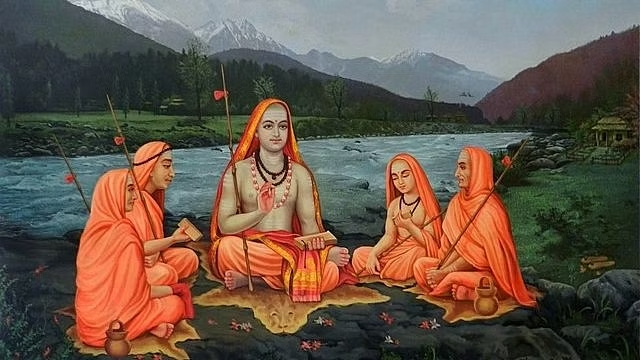
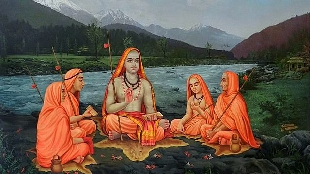
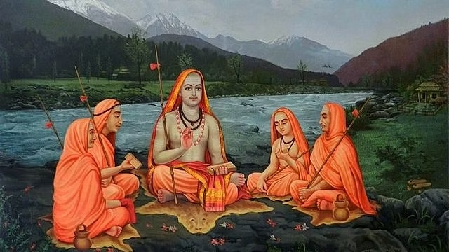
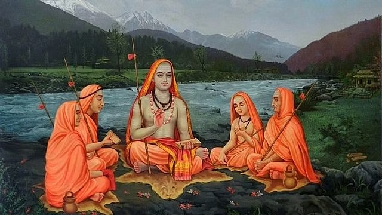

मठ परंपरा, भारतीय संस्कृति और आध्यात्मिकता का महत्वपूर्ण हिस्सा मानी जाती है, जो वैदिक काल से मौजूद है। यह एक संगठित सामाजिक और आध्यात्मिक परंपरा है जो विशेष धार्मिक और सामाजिक कार्यक्रमों को आयोजित करती है और ज्ञान और आध्यात्मिक शिक्षा का केंद्र के रूप में कार्य करती है। मठ परंपरा के नेताओं और संन्यासी आचार्यों द्वारा विभिन्न ग्रंथों का अध्ययन करके और धार्मिक और आध्यात्मिक संस्कृति को प्रचारित करके महत्वपूर्ण योगदान किया जाता है।
मठ परंपरा की कई शाखाएँ हैं जैसे अद्वैत, विशिष्टाद्वैत, द्वैत, श्री वैष्णव, शैव, शाक्त, गणपत्य आदि। प्रत्येक शाखा अपने विशेष सिद्धांत और रीति-रिवाज़ को स्थानापन करती है, जिसमें विभिन्न परंपराओं और आचार्यों की मान्यता होती है। शिक्षा, ज्ञान, तपस्या, ध्यान और सेवा मठों में बहुत महत्व रखते हैं। मठों के अंदर पारंपरिक विद्यालय, वैदिक अध्ययन केंद्र और आध्यात्मिक अनुसंधान संस्थान स्थापित किए जाते हैं, जो छात्रों को धार्मिक और आध्यात्मिक शिक्षा प्रदान करते हैं।
मठ परंपरा अपने विशिष्ट अवलोकन, रस्म, और सभ्यता के लिए प्रसिद्ध है। यह मठ द्वारा कठिन संकल्पों, संगठन, और सेवा की पूर्ति को महत्वपूर्ण धार्मिक कर्तव्य के रूप में मान्यता देता है। मठों में पूजा, रस्म, और सत्संग (आध्यात्मिक सभा) आयोजित किए जाते हैं, जिनके माध्यम से भक्तों को आध्यात्मिक शिक्षा और सत्संग का अनुभव करने का अवसर मिलता है।
मठ परंपरा ने सम्मेलन, विशेष उपवास, त्योहार, और सेमिनार जैसे विभिन्न धार्मिक और सामाजिक कार्यक्रमों का आयोजन किया है। इन कार्यक्रमों में छात्र, गुरु, शिष्य और सामाजिक क्रांतिकारी सक्रिय भाग लेते हैं, जिसका उद्देश्य संगठन और समाज में एकता और समरसता स्थापित करना होता है। मठ परंपराओं को धार्मिक अभ्यासों के साथ-साथ विभिन्न सामाजिक मामलों में सलाहकारी भूमिका भी निभानी पड़ती हैं।
मठ परंपरा आध्यात्मिक ज्ञान के प्रसार और प्रचार में विशेष महत्व रखती है। मठों में वाद-विवाद और व्याख्यानों का आयोजन किया जाता है, जहां शिक्षा प्रदान की जाती है और आध्यात्मिक ग्रंथों से महत्वपूर्ण विषयों पर चर्चा होती है। इन आयोजनों के माध्यम से मठ परंपराओं ने सदस्यों को आध्यात्मिकता, समरसता, अनुशासन और अहिंसा की समझ प्रदान की है।
अनुच्छेद: धार्मिक महत्व के अलावा, मठ परंपराओं का समाज पर गहरा प्रभाव होता है। वे स्वच्छता, शिक्षा, गरीबी का उन्मूलन, मानवाधिकार, न्याय, स्वतंत्रता, सामाजिक समरसता और सामाजिक सुधार को प्रोत्साहित करते हैं। मठ परंपराओं का सक्रिय योगदान होता है समाज में संघटनाओं का आयोजन करने, सहायता प्रदान करने और सामाजिक सेवा में योगदान करने में, जो समाज को आदर्श जीवन जीने के लिए प्रेरित करता है।
अनुच्छेद: समाप्ति में, मठ परंपराएं भारतीय संस्कृति और आध्यात्मिकता के महत्वपूर्ण घटक हैं। ये परंपराएं विभिन्न आचार्यों, ग्रंथों, विचारधाराओं और आध्यात्मिक सिद्धांतों के माध्यम से विशाल ज्ञान, समरसता, शांति और आध्यात्मिकता को प्रमोट करती हैं। शिक्षा, आध्यात्मिक अनुसंधान, सामाजिक सेवा और सामाजिक विकास मठ परंपराओं के मुख्य उद्देश्य रहते हैं। इन्होंने हमेशा सोच, ज्ञान, अच्छे इच्छा, एकता और आदर्शों का सम्मान किया है और भारतीय संस्कृति को मजबूत करने में महत्वपूर्ण योगदान किया है।